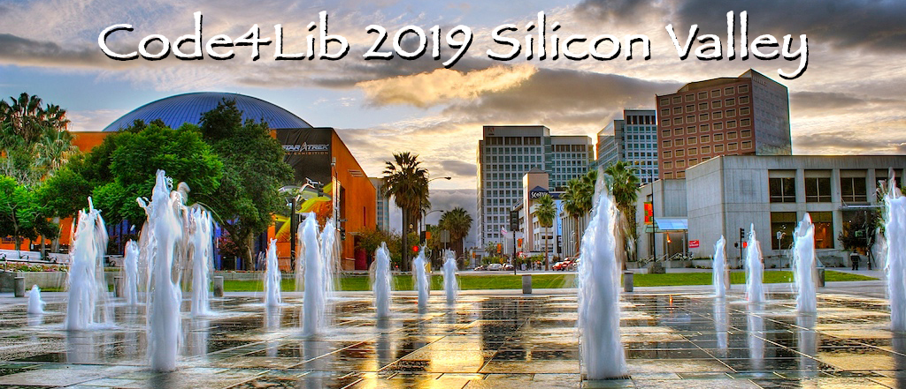

Why?
Silicon Valley is the undeniable Center of the Universe when it comes to computers. A great deal of what we now take for granted began here, from Hewlett-Packard, to Intel, Apple, Google, and many other companies, it's hard to deny that this area was not pivotal to computer innovation. So isn't it time that the premier library coding conference finally make a pilgrimage to this computer hardware and software version of Mecca?
According to Wikipedia, "The "valley" in its name refers to the Santa Clara Valley in Santa Clara County, which includes the city of San Jose and surrounding cities and towns, where the region has been traditionally centered."
And let's not forget the weather in mid-February California.
Location: San José, California
San José is the largest city in the Bay Area (and the 10th largest in the United States). A cultural and technological gem, San José has a walkable downtown, fast and free public wifi, a vibrant and diverse community of art and activism, great restaurants at a wide variety of price points, and one-of-a-kind museums. San José has an international airport, and is connected to Santa Clara light rail. It is home to many tech companies and a number of unique attractions, including the Winchester Mystery House and Great America amusement park.
More importantly, there are several brewpubs in downtown San José.
Honoring the People Whose Lands We Will Meet On
The conference will take place on lands originally inhabited by the Muwekma Ohlone Tribe. We wish to acknowledge this and thank them.
Financial Sketch
DLF/CLIR has kindly offered to be the financial sponsor no matter what the result of the vote is. We will likely hire Concentra to manage the conference. We expect a financial surplus from Code4Lib 2018 which can help make the initial downpayments to confirm the venue. We expect, as for past conferences, something along these lines:
- Registration fee between $200-250
- Hotel rates at or below $225 at the conference hotel, with nearby cheaper options
- Up to 470 attendees
As with past conferences, we are committed to work hard to raise funds to keep the cost as low as possible for attendees.
Transportation
The San José International Airport (SJC) is only 3 miles from downtown San José. Transportation options from the airport include airport shuttles, taxis (approximately $20-25), and several major rental car vendors. The cheapest option would be to take the free VTA Airport Flyer Shuttle to the Metro/Airport Light Rail station for fast and frequent service downtown. The bus lines 23, 168, 323 go to the San José Convention Center stop.
Other airport options include San Francisco International (SFO) and Oakland International (OAK), both approximately 38 miles north of the conference venue.
For getting around downtown there are many options including free shuttles.
Conference Venue
We are presently reviewing several options.
Accommodations
We are presently reviewing several options.
Local Attractions
- Tech Museum of Innovation
- San José Museum of Art
- Childrens Discovery Museum
- Winchester Mystery House
- Rosicrucian Egyptian Museum
- Silicon Valley Asian Art Center
- San José Museum of Quilts and Textiles
Food & Drink
Food:
Partial List
- San Pedro Square Market has many food options: pizza, Latin American food, craft beer, sushi, fusion hot dogs (whatever those are) and much more, pair your cuisine of choice with patio dining and lots of live entertainment.
- Cafe Stritch
- Il Fornaio
- La Pastaia
- Loft Bar and Bistro
- Mezcal Mexican Restaurant and Bar
- Mosaic Restaurant (Asian fusion)
- Nomikai
- Olla Cocina
Brew Pubs
- Uproar Brewing Company (very near SJ Convention Center)
- Gordon Biersch (approx. 2 blocks away)
- Good Karma Artisan Ales and Cafe (approx. 2 blocks away)
- What? One isn't enough for you? How about the San Jose Brew Bike, which is a 15-passenger, pedal powered, party cycle that rolls to different breweries and bars in Downtown San José. We're not even making this up.
Extended Holiday Options
The San Francisco Bay Area and surrounding areas offer may potential options for an extended vacation. In San José you are only an hour away from San Francisco, a bit more than an hour to historic Monterey, two hours away from the Sonoma or Napa Valley wine regions, and three hours from the magnificent Yosemite National Park.
Proposal Committee
Questions, comments, etc. should be sent to code4lib2019@gmail.com, which will reach all of the Proposal Committee.
- Mark A. Matienzo - Stanford University
- Aaron Collier - Stanford University
- Nicole Johnson - bepress
- Roy Tennant - OCLC
- Eric Phetteplace - California College of the Arts